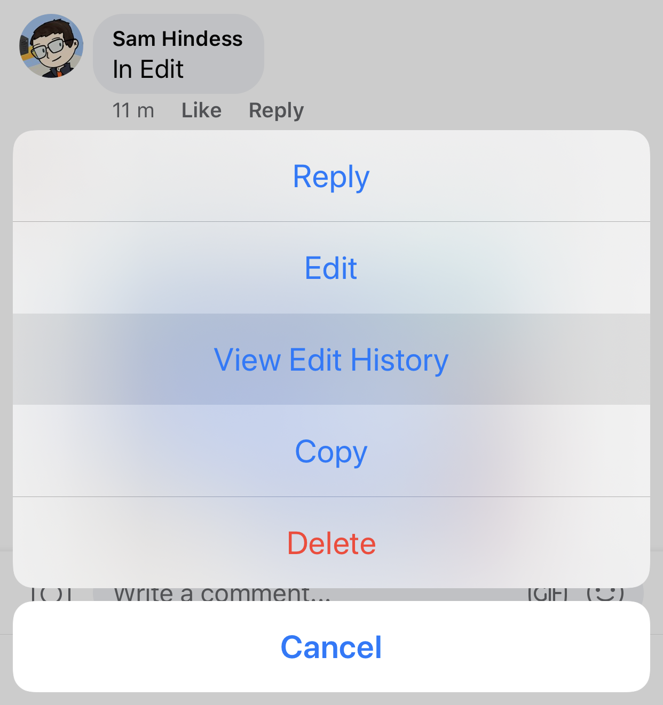

In Edit is a simple way to hide a spoiler on Facebook. It is often used in Game Show groups to hide solutions to problems.
iOS
Posting a spoiler
1. Post your comment containing the spoiler
2. Long-press on the posted comment, and press Edit

3. Edit the comment to say "In Edit", or something similar, and press Update

Revealing a spoiler
Long-press on the comment, and press View Edit History
